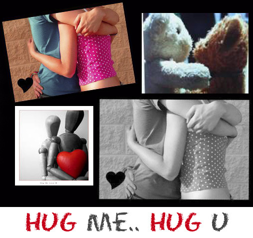

:المحتويات

إذا كنت محسنًا كن سعيدًا! لأنك ملأت الأيدي الفارغة, وسترت الأجساد العارية, وكوّنت من لا كيان له فرضيت عن نفسك, وودت إسعاد عشرات ومئات لتتضاعف مسرتك النبيلة الواحدة بتعدُّد المنتفعين بأسبابها.
إذا كنت شابًا كن سعيدًا! لأن شجرة مطالبك مخضلة الغصون, وقد بعد أمامك مرمى الآمال فتيسر لك إخراج الأحلام إلى حيز الواقع إذا كنت بذلك حقيقًا. وإذا كنت شيخًا كن سعيدًا! لأنك عركت الدهر وناسه وألقيت إليك من صدق الفراسة وحسن المعالجة مقاليد الأمور: فكل أعمالك إن شئت منافع, والدقيقة الواحدة توازي من عمرك أعوامًا لأنها حافلة بالخبرة والتبصر وأصالة الرأى, كأنها ثمرة الخريف موفورة النضج, غزيرة العصير, أشبعت بمادة الاكتمال والدسم والرغبة.
إذا كنت كثير الأصدقاء كن سعيدًا! لأن ذاتك ترتسم في ذات كل منهم. والنجاح مع الصداقة أبهر ظهورًا والإِخفاق أقل مرارة. وجمع القلوب حولك يستلزم صفات وقدرات لا توجد في غير النفوس ذات الوزن الكبير, أهمها الخروج من حصن أنانيتك لاستكشاف ما عند الآخرين من نبل ولطف وذكاء. وإذا كنت كثير الأعداء كن سعيدًا! لأن الأعداء سلّم الارتقاء وهم أضمن شهادة بخطورتك. وكلما زادت منهم المقاومة والتحامل, وتنوَّع الاغتياب والنميمة, زدت شعورًا بأهميتك, فاتعظت بالصائب من النقد الذي هو كالسم يريدونه فتَّاكًا ولكنك تأخذه بكميات قليلة فيكون لك أعظم المقويات, وتعرض عما بقي, وكان مصدره الكيد والعجز, إعراضًا رشيقًا. وهل يهتم النسر المحلّق في قصىّ الآفاق بما تتآمر له خنافس الغبراء?
إذا كنت عبقريّا كن سعيدًا! فقد تجلّي فيك شعاع ألمعي من المقام الأسنى ورمقك الرحمن بنظرة انعكست صورتها على جبهتك فكرًا, وفي عينيك طلسمًا, وفي صوتك سحرًا. والألفاظ التي هي عند الآخرين أصوات ونبرات ومقاطع صارت بين شفتيك وتحت لمسك نارًا ونورًا تلذع وتضىء, وتُخجّل وتُكبّر, وتذلّ وتنشط, وتوجّع وتلطِّف, وتُسخط وتُدهش, وتقول للمعنى (كن!) فيكون.
إذا كنت حرّاً كن سعيداً! ففي الحرية تتمرّن القوى وتتشدد الملكات وتتسع الممكنات. وإن كنت مستعبدًا كن سعيدًا! لأن العبودية أفضل مدرسة تتعلم فيها دروس الحرية وتقف على ما يصيرك لها أهلاً.
إذا كنت محبًّا محبوبًا كن سعيدًا! فقد دلَّلتك الحياة وضمتك إلى أبنائها المختارين, وأرتك الألوهية عطفها في تبادل القلوب, واجتمع النصفان التائهان في المجاهل المدلهمة فتجلت لهما بدائع الفجر وهنأتهما الشموس بما لم تهتد بعد إليه في دورتها بين الأفلاك, وأفضى إليهما الأثير بمكنون أسراره.
كن عظيمًا ليختارك الحب العظيم, وإلا فنصيبك حب يسفُّ التراب ويتمرَّغ في الأوحال, فتظل على ما أنت أو تهبط به, بدلاً من أن تسمو إلى أبراج لم ترها عين ولم تخطر عجائبها على قلب بشر, لأن هياكل مطالبنا إنما تقام على خرائط وهمية وضعتها منّا الأشواق